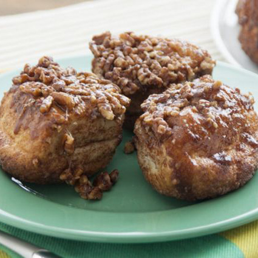

Chocolate Sticky Bread
Ingredients
- 1 cup Hershey's Mini Kisses Milk Chocolates
- 2 loaves (16 oz. each) frozen bread dough
- 3/4 cup granulated sugar
- 1 tablespoon Hershey's Cocoa
- 1 teaspoon ground cinnamon
- 1/2 cup (1 stick) butter or margarine , melted and divided
- 1/2 cup packed light brown sugar
- 1/4 cup water
Cooking Instructions
- Thaw loaves as directed on package; let rise until doubled.
- Stir together granulated sugar, cocoa and cinnamon. Stir together 1/4 cup butter, brown sugar and water in small microwave-safe bowl. Microwave at MEDIUM (50%) 30 to 60 seconds or until smooth when stirred. Pour mixture into 12-cup fluted tube pan.
- Heat oven to 350°F. Pinch off pieces of bread dough; form into balls(1-1/2 inches in diameter) placing 3 chocolates inside each ball. Dip each ball in remaining 1/4 cup butter; roll in cocoa-sugar mixture. Place balls in prepared pan.
- Bake 45 to 50 minutes or until golden brown. Cool 20 minutes in pan; invert onto serving plate. Cool until lukewarm. 12 servings.
Photo Courtesy of rhodesbread on instructables.com